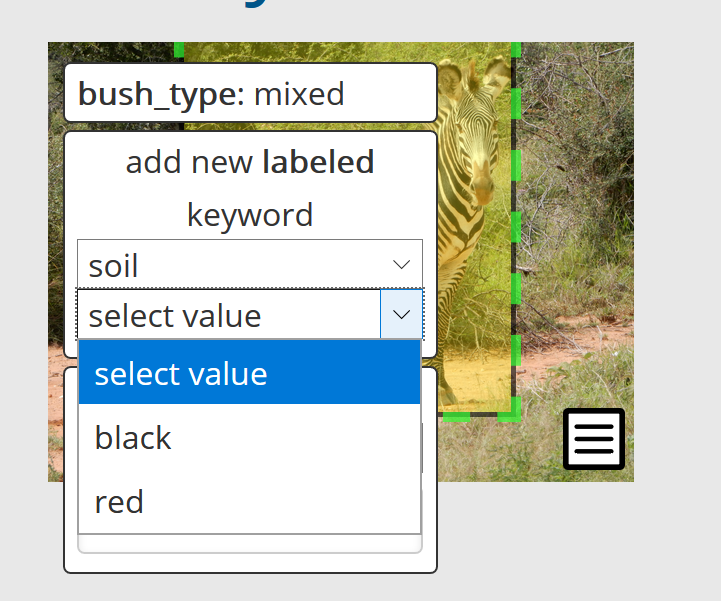

Encounter#
In Wildbook, an Encounter is the foundation component of the software. All entries that a user uploads are encounters. Encounters provide a reference to a time and location where a single animal was spotted.
Encounter Page Format#
At the top of the encounter page, there is an overview section about the encounter. The encounter will remain unassigned until it is associated with a Marked Individual. For each of the following sections, click Edit to make changes to the associated metadata.
If you see fields that are not covered on this page, they are fields that are custom to your Wildbook. Contact your administrator or Wildbook support for assistance in understanding these custom fields.
Location#
At least one piece of location information must be set for a valid encounter. The information can be used to refine matching checks to improve processing, as well as to provide valuable information in identifying where an encounter took place.
Set Location#
Provide a description of the location where the encounter occurred. Once you have entered the information, click Set Location to confirm the new value. (Note:This is searchable, but is not used in refining potential matches. This is valuable if there is a set of landmarks that have multiple names, or if a citizen scientist is submitting an encounter and they are unsure of exact location.)
Set Reported Country#
Select from a list of countries where the encounter occurred. Once you’ve selected the appropriate country, click Set to confirm the new value.
Set Location ID#
Select from a list of location IDs (a.k.a formally defined “study sites”) where the encounter occurred. Once you’ve selected the appropriate location, click Set Location ID to confirm the new value. (Note: This list is hierarchical and determined by the administration of the Wildbook. We recommend no more than 5 hierarchical layers of locations. Reach out to your administrators or to Wildbook support for configuration assistance.)
Latitude and Longitude#
Use the map or text fields to enter the GPS coordinates where the encounter occurred. Once you’ve entered the coordinates, click Update GPS to confirm the new value. (Note: These coordinates need to be input in the decimal degrees format. If you have GPS coordinates in DMS or another format, you can use this converter to change the format before entry.)
Date#
At least one date event must be entered for the encounter to be valid.
Set Date#
Enter a date and/or time to alter the date associated with the encounter. You can use the Reset Encounter Date calendar tool to adjust the date and time presented in Set Date to ensure correct formatting. When you’ve entered the correct date and/or time, click Set Date to confirm the value. (Note: Entry must adhere to ISO format: YYYY-MM-DD HH:mm)
Set Verbatim Event Date#
Enter information to describe an event relative to the encounter. This is searchable, but is not used in refining matches. When you’ve entered your event description, click Set to confirm the value.
Gallery#
The primary purpose of the Gallery is to display the annotations associated with an encounter. This can mean that a media asset is displayed multiple times with different annotations to indicate different detections found.
Labeled Keywords#
Labelled keywords are provided to allow admins to preset values for users to apply to a MediaAsset. To select a labeled keyword:
Click on an image to expand it.
Hover on the add new keyword button or hover over an existing keyword.
Under add new labeled keyword, select one of these predefined labels.
From the subsequent value dropdown, select the desired value.
Once selected, the keyword appears on the image in the format ‘label: value’.

Labeled keywords are set in the commonConfiguration.properties file; reach out to your admin or to Wildbook support for configuration assistance. See Configuration for more information.
Keywords#
Keywords allow for easy assignment of any string to a MediaAsset. To select an existing keyword:
Click on an image to expand it.
Hover on the add new keyword button or hover over an existing keyword.
Under add new keyword, select the desired keyword.
Once selected, the keyword appears on the image. To add a new keyword:
Click on an image to expand it.
Hover on the add new keyword button or hover over an existing keyword.
Under add new keyword, type in the text field with the helper text “or enter new”. Hit enter to confirm the keyword.
Once entered, the keyword appears on the image. Keywords are not automatically curated or checked against existing keywords, so you can create duplicate keywords easily. Admins can manage keywords from the Administer > Photo Keywords menu option.
Remove This Image#
If an image is low quality or not providing value, select this button to remove the image from the encounter. This does not remove the image from the database and can be reversed.
Match Results#
After an annotation has run through ID, you can select this button to see the proposed matches for the annotation. This will take to you to the results page, where you will actually perform matching.
Start Another Match#
If the annotation has no viable matches, or if there have been extension additions to the database, you may want to run the annotation back through the ID process. Select this button to start the process again.
Add Annotation#
If detection failed to recognize an animal, you can click this option to manually create an Annotation for identification. More information about manual annotation can be found here.
Add image to Encounter#
If there were images that did not get added with the initial upload, you can click this button to browse to the images and upload them to the system. Note that detection is not run on these images automatically. Reach out to Wildbook support for assistance.
Identity#
Identity is focused on providing information if an encounter has been associated with a given Marked Individual.
Setting Individual ID#
New Individual#
If you have determined the encounter is of an individual that does not exist in the current Wildbook, you should enter a unique ID. This ID needs to be distinct from any Individual ID in your catalog that currently exists. When you’ve entered the ID, click New to confirm the value.
Existing Individual#
If you have determined the encounter is of an existing individual, fill out the information under Add to existing individual ID. Begin typing the name associated with the individual you want to associate the encounter with. A dropdown will display a list of all matching individuals. Select from the list then click Add.
Matched by#
Used to indicate the method used in establishing the identity associated with the encounter. Values are:
Pattern Match: Wildbook provided a recommendation of a matching encounter and, based on the pattern, the animal was determined to be the same individual.
Visual Inspection: User compared the pictures between two encounters and determined them to be the same individual.
Unknown: This encounter has not yet been matched.
Unmatched first encounter: No matches were found in the Wildbook, making this a new individual. This is not recommended when adding to an existing encounter.
Suppress e-mail/RSS#
Select this option to prevent emails from being sent as updates to the Individual occur. When you’ve selected the Individual ID, click Add to confirm the value.
Other fields#
Set Alternate ID#
If there is an alternative ID used to identify this animal, such as in a historical catalogue, enter the ID. Once you’ve entered the ID, click Set to confirm the value.
Matched by#
Used to indicate the method used in establishing the identity associated with the encounter. Values are:
Pattern match: Wildbook provided a recommendation of a matching encounter and, based on the pattern, the animal was determined to be the same individual.
Visual inspection: User compared the pictures between two encounters and determined them to be the same individual.
Unmatched first encounter: No matches were found in the Wildbook, making this a new individual.
When you’ve selected the correct matching method, click Set to confirm the value.
Sighting (formerly “Occurrence”)#
Fill out the information under Manage Occurrence Assignment to associate the encounter with a Sighting/Occurrence.
Create Occurrence#
If you’ve determined the encounter is part of a sighting/occurrence that does not exist in the current Wildbook, you should enter a unique ID. This ID needs to be distinct from any Occurrence ID that currently exists. When you’ve entered the ID, click Create to confirm the value.
Add to Occurrence#
Begin typing the name sighting/occurrence you want to associate the encounter with. A dropdown will display a list of all matching sightings/occurrences. Select from the list. Once you’ve selected the Occurrence ID, click Add to confirm the value.
Remove from Occurrence#
If you have two separate occurrence IDs that should actually be part of the same sighting/occurrence, click the Remove button next to Remove from occurrence, copy the correct ID from the related encounter, and enter the new ID in the Add to Occurrence field.
If you don’t see the option to Add to Occurrence after you’ve removed the previous ID, refresh the Encounter page and try again.
Attributes#
Encounters can also have these important attributes.
Taxonomy: Using the dropdown, select from the available names. When you’ve selected the correct taxonomy, click Set to confirm the value. Importantly, the Encounter Taxonomy affects how any Annotations for the Encounter are processed through the Image Analysis Pipeline upon data submission or during later matching.
Status: Using the dropdown, select the status that reflects the animal’s state in the encounter. Once you’ve selected alive or dead, click Reset Status to confirm the value.
Sex: Using the dropdown, select the value that reflects the animal’s sex. When you’ve selected the correct sex or unknown, click Reset Sex to confirm the value.
Noticeable Scarring: Using the text field, enter text that describes any scarring that could be useful in making a visual comparison between animals. When you’ve entered an appropriate description of the scarring, click Reset Scarring to confirm the value.
Behavior: Using the text field, provide a description of the behavior of the animal in the given encounter. When you’ve entered an appropriate description of the behavior, click Submit Edit to confirm the value.
Group Role: Using the text field, provide a description of the role the observed animal has within their group during this Encounter. When you’ve entered an appropriate description of the role, click Submit Edit to confirm the value. (Note: If the information in this field matches the pre-defined behavior list, you will be able to filter on the behavior on Encounter search page.)
Life stage: A list of life stages can be made available on your platform. If the list exists, use the dropdown to select an appropriate life stage for the animal in the encounter. When you’ve selected the correct life stage, click Set to confirm the value. Life stage is configured in the commonConfiguration.properties file. See Configuration for more information. To request the life stage field be added or to request additional values, contact Wildbook support for assistance.
Additional comments: Any information that you want to associate with the encounter, you can add in this field. When you have the language as you want it, click Submit Edit to confirm the entry.
Contact Information#
All information added to the contact information presently references platform users only.
Add submitter by email address, Add photographer by email address, and Add others to notify by email address all operate in the same manner.
To add reference to a user in one of these categories, enter their email address and click Add.
To remove reference to a user in one of these categories, click the Remove button next to their information.
(Note: These fields require the email address of a user with an account. The account does not require a name or organization be associated with the account. If you want to recognize users without accounts, use the Additional Comments field or use dummy emails in these fields.)
Metadata#
Metadata is used to handle the management of a single encounter.
Set Workflow State: Workflow State is used to indicate the review state of an encounter:
Unapproved - an encounter that has not been reviewed and accepted by a researcher or admin. This is the default state for encounters submitted using the standard reporting.
Approved - an encounter that has been reviewed and accepted by a researcher or admin. This is the default state for encounters submitted using bulk import.
Unidentifiable - an encounter that has been reviewed and determined to be unusable, but should remain in the system. Once you’ve selected the correct state, click Set to confirm the selection.
Assign to user: Use to select from a list of researchers and administrators on the platform and assign that user as the managing researcher of the encounter. Once you’ve selected the correct user, click Assign to confirm the selection.
View Audit Trail: Use this viewer to see activity that has taken place involving this encounter.
Add Comment: Field to allow comments to be entered by researchers and administrators about the encounter. Click Add comment to add a comment to the Audit trail.
Delete Encounter: If you want to remove an encounter from the system, click Delete Encounter?. A confirmation window will display; click OK to confirm. This action is permanent.
Observations#
Observations are intended to be short identifiers associated with a given encounter. Observations are searchable, but are not verified or accessible between encounters.
To create an observation, enter a label and value, then click Set.
To edit an observation’s value, change the text of an existing value, then click Set when finished.
To delete an observation, remove the text of an existing value, then click Set.
Note
Observations can only be edited one at a time.
Measurements#
Measurements are used to track numeric information associated with an encounter. These are set in the commonConfiguration.properties file. See Configuration for more information. To request measurements be added, contact Wildbook support for assistance. (Note: You can edit multiple measurements before clicking Set.)
Tracking#
Tracking is used to manage data about tags seen during an encounter.
Physical Tag Data: provides a space for a left or right-side tag to be denoted. Click Set after the tag information is entered.
Satellite Tag Metadata: provides information for information associated with tagging done using satellites, including name of satellite, serial number, and Argos PTT. Click Set after the tag information is entered.
Biological Samples#
To enter a biological sample:
Click Add biological sample.
Enter the information you have associated with the sample. The only required information is the Sample ID.
Click Set to finalize the sample and its associated metadata.
Use the link on the confirmation page to navigate back to the encounter if you want to enter analysis information, including:
Haplotype
Microsatellite markers
Genetic sex determination
Biological/chemical measurement
Open the appropriate analysis, then click Set to save the information you add.
Click the X button under Remove to remove an entire sample.